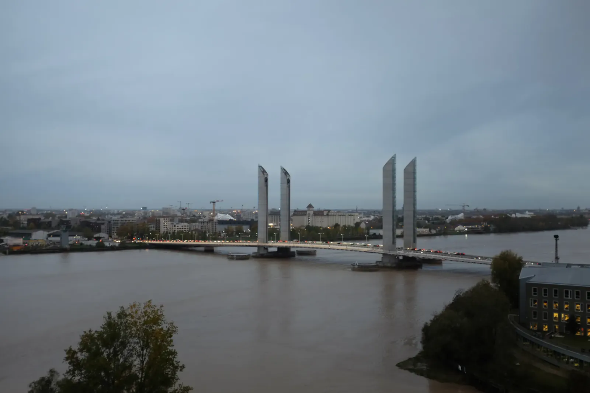

Port of the Moon
Until I got there, Bordeaux was just a label on a wine bottle. I met the city through a window high above the Garonne on my first evening, as the sky went pink and orange over the red-brick apartment blocks and a tram rolled along tracks laid in grass. Already my kind of city! Below, the river ran wide and muddy brown toward the Pont Chaban-Delmas, a lift bridge whose middle span rises straight up between four towers whenever a tall ship needs to pass. Bordeaux's old nickname is the Port of the Moon, for the crescent the Garonne bends around it. The river is tidal this far inland, so the moon still has a say in things.
The next day I set out on foot through the old town, where the streets are narrow and the stone turns the color of honey when the low sun hits it. Cathédrale Saint-André is the big one. Inside, a rose window shines through the haze above the doors and stained glass glows red, blue and gold. The Gothic vaults climb higher than seems reasonable for stone. Outside, a spire was wrapped in scaffolding, which is fair enough for a cathedral consecrated in 1096! By dusk I had wandered to the Place des Quinconces, one of the largest city squares in Europe, where the Monument aux Girondins rises over a fountain of rearing sea horses and tritons. It remembers the Girondins, revolutionary deputies from this region, many of whom were guillotined.

The following day I headed to the Jardin Public, an English-style garden in the heart of the city, and found it in full autumn color. Go in late November like I did, because the colors were at their peak. Star-shaped leaves lay in golden carpets with a pigeon picking through them. Rust-red cypresses, conifers that shed their needles every fall, towered over the lake. Another tree had been pruned into green clouds, small iron bridges crossed the water, and a gondola-style boat called the Petit Mousse sat at its little dock. Even the bamboo grove stayed green.